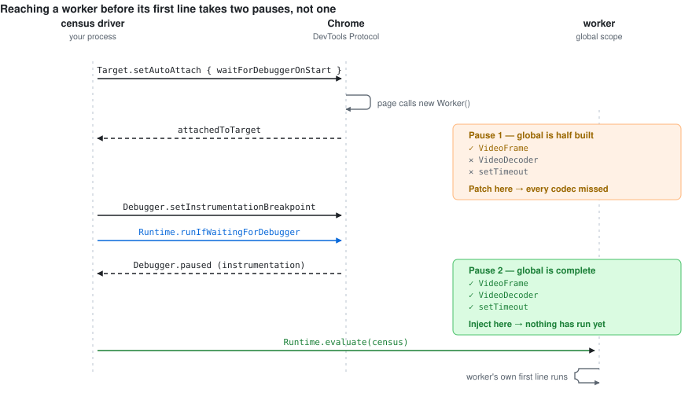
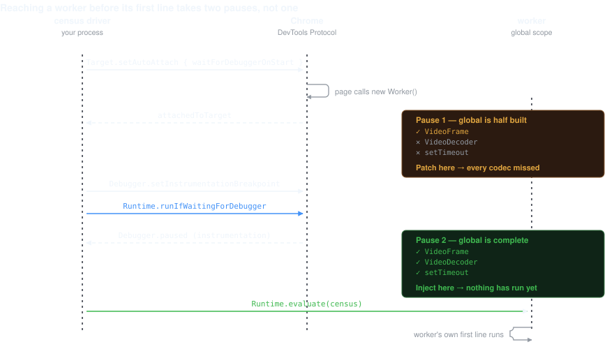

CDP driver
@motionvector/webcodecs-census-cdp
Instrument a page and every one of its Web Workers from outside the app, with no change to the code being measured — and get in before a worker's first line runs.
npm install --save-dev @motionvector/webcodecs-census-cdpimport { attach, launchChrome } from '@motionvector/webcodecs-census-cdp';
import { summarize } from '@motionvector/webcodecs-census';
const chrome = await launchChrome({ executablePath: CHROME });
const session = await attach({ browserURL: chrome.browserURL });
await session.navigate('http://localhost:5173/');
// …drive the app…
console.log(summarize(await session.census()));
session.detach();
await chrome.kill();attach(options)
Returns a CensusSession. Pass either a browser endpoint or a page socket.
| Option | Type | What it does |
|---|---|---|
browserURL | string | DevTools HTTP endpoint, e.g. http://127.0.0.1:9222. The driver resolves a page target from it. |
webSocketDebuggerUrl | string | Or a page target's WebSocket URL directly. |
matchUrl | string | RegExp | Choose among page targets when several are open. A string matches as a substring. |
install | { sampleIntervalMs?, keepSamples?, stackDepth? } | Handed to installCensus inside each context. |
shimSource | string | Override the injected source. Defaults to the built census shim. |
onContext | (info) => void | Called per instrumented context with { type, url, sessionId }. |
onError | (e: Error) => void | Called when a context could not be instrumented. Injection failures are reported here rather than thrown. |
Ordering inside attach is load-bearing: auto-attach is armed and the document
script registered before anything navigates, or a worker can start unobserved.
The shim is also evaluated once against the current document, so attaching to an
already-loaded page still instruments it — installing twice is a no-op by design.
CensusSession
| Method | What it does |
|---|---|
census() |
Snapshot every context. Each is queried on its own CDP session, so no cross-context
message channel is needed and a wedged worker cannot stop the others reporting.
Each entry carries targetUrl and targetType alongside the
ContextCensus fields.
|
contexts() | Every context currently instrumented, as { sessionId, type, url }. The page's own session has sessionId: null. |
evaluate(expression, sessionId?) | Run an expression in one context, or the page by default. Awaits promises and returns the value, or null if the call could not be made. |
navigate(url) | Page.navigate. The document script is already registered, so the new document is instrumented from its first line. |
redirect(rules) | Serve matching URLs from somewhere else — see below. |
detach() | Stop listening and close the socket. Does not close the browser. |
redirect(rules)
Pins a request to a different URL, so a large media asset can be served from a local copy and a run is fast and repeatable without editing the app under test.
await session.redirect([
{ from: 'cdn.example.com/big.mp4', to: 'http://127.0.0.1:8081/media.mp4' },
{ from: /\/segments\/.*\.m4s$/, to: 'http://127.0.0.1:8081/fixture.m4s' },
]);
A string rule matches as a substring; a RegExp is tested against the full URL.
Everything else continues untouched.
launchChrome(options)
Launches Chrome with a throwaway profile. It never reuses, and never kills, a browser you already have open.
| Option | Type | Default | What it does |
|---|---|---|---|
executablePath | string | required | Path to a Chrome or Chromium binary. |
port | number | 0 | Debugging port. 0 lets Chrome choose a free one, which is the safe default — a fixed port collides with any browser you already have open for debugging. |
headless | boolean | true | Pass false to see the window. |
args | string[] | [] | Extra flags. --user-data-dir and the debugging port are always the driver's. |
startupTimeoutMs | number | 20000 | How long to wait for the debugging port. |
Returns { process, browserURL, kill }. kill() signals only the
process it spawned and removes only the profile it made, waiting for Chrome's helper
processes to exit first — removing the profile straight away races them and fails with
ENOTEMPTY.
Attaching to a browser you are signed into risks touching your session, and a shared profile makes runs non-repeatable. Chrome's DevTools Protocol is also unauthenticated by design: anything that can reach the port controls the browser. Never expose a debugging port beyond localhost.
Also exported
findPageTarget(origin, match?) | Resolve a page target from a DevTools endpoint. Throws with the targets it did see, which is usually the fastest way to find out you pointed at the wrong browser. |
CdpClient | A minimal flat-session CDP client, if you need one. It runs on the WebSocket built into Node and has no dependencies — anything larger would pull in a browser-automation stack. |
How it reaches a worker
Two Chrome behaviours make a worker reachable, and the second one has a trap in it.
-
Page.addScriptToEvaluateOnNewDocumentruns before any page script, on every navigation — which adocument_startcontent script does not guarantee. -
Target.setAutoAttachwithwaitForDebuggerOnStartpauses each new worker before its first line.
At that auto-attach pause a dedicated worker's global is only half built. Measured on Chrome 151:
| At the auto-attach pause | |
|---|---|
VideoFrame, AudioData, ImageBitmap, EncodedVideoChunk | present |
VideoDecoder, VideoEncoder, AudioDecoder, AudioEncoder | absent |
setInterval, setTimeout, queueMicrotask | absent |
Patch there and you instrument the frame types but miss every codec. So the driver arms a
beforeScriptExecution instrumentation breakpoint and resumes into it. That
second pause has the global fully populated and is still before the worker's own script
runs. The breakpoint is removed immediately after injection — leaving it armed would pause
on every subsequent script the worker loads and stall the app under test.
If the Debugger domain is unavailable in a target, the driver falls back to
injecting at the earlier pause: weaker, but it still catches frame allocations. A worker is
always resumed, even when injection failed — leaving one paused would hang
the page, which is far worse than a gap in the census.
Auto-attach is not recursive, so each attached target arms it again for its own children.
That is what reaches nested workers. data: and blob: URL workers
are covered too, and iframes get the document script rather than the pause dance.


This behaviour is measured rather than specified, so the repository asserts it directly in
test/platform-assumptions.test.mjs and prints what it found at each pause. A
Chrome change is then reported as a Chrome change, rather than surfacing as a mysterious
failure somewhere else.